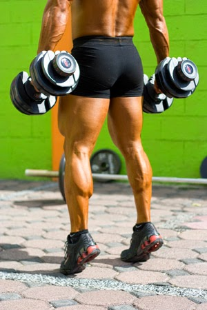

Tipos de ejercicios para pantorrillas
Homepage
Our Clients
About Us
Privacy policy
Terms and Conditions
Photo gallery
Contacts
Welcome to Tipos de ejercicios para pantorrillas
Los 9 mejores ejercicios para pantorrillas • FullMusculo.com
4 ejercicios para fortalecer gemelos - Blog de EFAD Deportes
Pantorrillas: guía de ejercicios para fortalecerlas - SPORT
Ejercicios de piernas para tonificar gemelos / pantorrillas .
PANTORRILLAS GRANDES - EL MEJOR EJERCICIO para .
17 abr. 2020 —
5 ejercicios para lograr unas pantorrillas tonificadas y dignas .
Los 3 mejores ejercicios para pantorrillas | Esquire
Ejercicios para pantorrillas: 3 opciones para tus rutinas de .
El mejor entrenamiento de pantorrilla / CIENTÍFICAMENTE .
14 ejercicios para PANTORRILLAS EN CASA - YouTube
Photo gallery
2021.06.22 17:31

<div class="mc_vtvc_th b_canvas"><div class="cico" style="width:234px;height:131px;"><div class="rms_iac" style="height:131px;line-height:131px;width:234px;" data-height="131" data-width="234" data-alt="Ejercicio espalda superior alemanes tobillos pantorrilla columpio hamaca aero yoga pilates - aereo" data-role="presentation" data-class="rms_img" data-src="https://tse3.mm.bing.net/th?id=OVP.ZXBuDaV_LPFsJvuoVmtqpwEsDh" frameborder="0" allow="accelerometer; autoplay; encrypted-media; gyroscope; picture-in-picture" allowfullscreen>
Vivamus fermentum nibh
© Tipos de ejercicios para pantorrillas. All rights reserved. | Photos by Fotogrph
Twitter
Pinterest
Google+
Pinterest